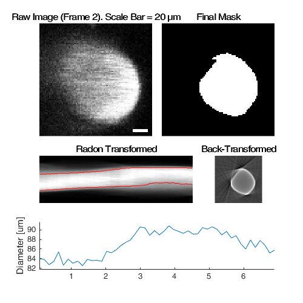
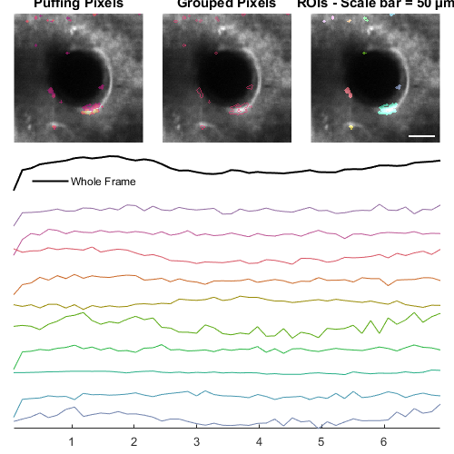

CompositeImg
Contain and analyse groups of images from the same RawImg
Contents
Usage
OBJ = CompositeImg(RAWIMG, CONFIG, PROCTYPE) OBJ = CompositeImg(NAME, ...)
Arguments
- RAWIMG is the RawImg object array that will be used to create the ProcessedImg child objects in the CompositeImg object.
- CONFIG is the Config object that will be used to create the ProcessedImg child objects in the CompositeImg object.
- PROCTYPE is the type of ProcessedImg child objects that will be created in the CompositeImg object.
- NAME is the name for this CompositeImg object.
Details
CompositeImg objects are used to contain and analyse groups of processable objects that are derived from the same RawImg. This allows efficient use of memory, since the same RawImg object does not need to be duplicated to be analysed in different ways.
See Also
Examples
The following examples require the sample images and other files, which can be downloaded manually, from the University of Zurich website (http://www.pharma.uzh.ch/en/research/functionalimaging/CHIPS.html), or automatically, by running the function utils.download_example_imgs().
Create a CompositeImg object interactively from one or more files
The following example will illustrate the process of creating a CompositeImg object interactively. Although it is possible to do so by using the constructor method followed by the add() method, it can be easier to use the static method from_files, as illustrated below.
% Construct an CompositeImg using the static method from_files
ci01 = CompositeImg.from_files()
In order to load a raw image file, we must first select the type of RawImg to create. Press three and then enter to select the SCIM_Tif.
----- What type of RawImg would you like to load? -----
>> 1) BioFormats
2) RawImgDummy
3) SCIM_TifSelect a format: 3
Then, use the interactive dialogue box to select the raw image file xsectscan_scim.tif, which should be located in the subfolder tests>res, within the CHIPS root directory.

Use the interactive dialogue box to select the dummy calibration (calibration_dummy.mat):

The next stage is to define the 'meaning' of the image channels. For this example we will specify the first channel as a cellular signal, and the second channel as blood plasma. Press six and enter, followed by one and enter, to complete the selection.
----- What is shown on channel 1? -----
>> 0) <blank>
1) blood_plasma
2) blood_rbcs
3) Ca_Cyto_Astro
4) Ca_Memb_Astro
5) Ca_Neuron
6) cellular_signal
7) FRET_ratioAnswer: 6
----- What is shown on channel 2? -----
>> 0) <blank>
1) blood_plasma
2) blood_rbcs
3) Ca_Cyto_Astro
4) Ca_Memb_Astro
5) Ca_Neuron
6) cellular_signal
7) FRET_ratioAnswer: 1
Since no type of ProcessedImg has been specified, we must specify one or more types of ProcessedImg to create. Press five followed by enter, then one followed by enter, then enter, to choose XSectScan and CellScan.
----- Choose as many ProcessedImg classes as you would like -----
>> 0) <Finished>
1) CellScan
2) FrameScan
3) LineScanDiam
4) LineScanVel
5) XSectScanSelect a class: 5
>> 0) <Finished>
1) CellScan
2) FrameScan
3) LineScanDiam
4) LineScanVel
5) XSectScanSelect a class: 1
>> 0) <Finished>
1) CellScan
2) FrameScan
3) LineScanDiam
4) LineScanVel
5) XSectScanSelect a class:
Then, we must define the masks (i.e. the relevant part of the raw image) for the different ProcessedImg children. Press four followed by enter, to choose a square mask for the XSectScan, then draw a square on the image that appears. Afterwards, press enter to complete mask selection for the XSectScan images.
===== Select the masks for the XSectScan images =====
----- Which type of mask would you like to select? -----
>> 0) <finished>
1) everything
2) columns
3) rows
4) square
5) rectangle
6) polygon
7) circle
8) ellipse
9) freehand
10) even-lines
11) odd-lines
12) channelsSelect a maskType: 4

----- Which type of mask would you like to select? -----
>> 0) <finished>
1) everything
2) columns
3) rows
4) square
5) rectangle
6) polygon
7) circle
8) ellipse
9) freehand
10) even-lines
11) odd-lines
12) channelsSelect a maskType:
We must also define masks for the different CellScan. Press one followed by enter, then enter, to use all of the image.
===== Select the masks for the CellScan images =====
----- Which type of mask would you like to select? -----
>> 0) <finished>
1) everything
2) columns
3) rows
4) square
5) rectangle
6) polygon
7) circle
8) ellipse
9) freehand
10) even-lines
11) odd-lines
12) channelsSelect a maskType: 1
----- Which type of mask would you like to select? -----
>> 0) <finished>
1) everything
2) columns
3) rows
4) square
5) rectangle
6) polygon
7) circle
8) ellipse
9) freehand
10) even-lines
11) odd-lines
12) channelsSelect a maskType:
Finally, we must select the appropriate Calc methods for the CellScan. Press enter three times to choose the defaults.
----- Which ROI detection method would you like to use? -----
>> 1) whole frame
2) load ImageJ ROIs
3) load mask from .tif or .mat file
4) 2D FLIKA (automatic ROI selection)
5) 2.5D FLIKA (automatic ROI selection)
6) 3D FLIKA (automatic ROI selection)
7) CellSort (automatic ROI selection)Select a detection method, please:
----- Which ROI measuring method would you like to use? -----
>> 1) simple baseline normalised
Select a measuring method, please:
----- Which signal detection method would you like to use? -----
>> 1) no signal detection
2) detect + classify signalsSelect a detection method, please:
We have now created a CompositeImg object interactively.
ci01 =
CompositeImg with properties:
imgTypes: {'CellScan' 'XSectScan'}
masks: {{1x1 cell} {1x1 cell}}
children: {[1x1 XSectScan] [1x1 CellScan]}
nChildren: 2
state: 'unprocessed'
name: 'xsectscan_scim'
rawImg: [1x1 SCIM_Tif]Prepare a RawImg object for use in these examples
% Prepare a RawImg array for use in these examples fnRawImg = fullfile(utils.CHIPS_rootdir, 'tests', 'res', ... 'xsectscan_scim.tif'); channels = struct('cellular_signal', 1, 'blood_plasma', 2); fnCalibration = fullfile(utils.CHIPS_rootdir, 'tests', 'res', ... 'calibration_dummy.mat'); calibration = CalibrationPixelSize.load(fnCalibration); rawImg = SCIM_Tif(fnRawImg, channels, calibration)
Opening xsectscan_scim.tif: 100% [=================================]
rawImg =
SCIM_Tif with properties:
filename: 'D:\Code\Matlab\2p-img-analysis\tests\res\xsectscan_scim.tif'
isDenoised: 0
isMotionCorrected: 0
metadata_original: [1×1 struct]
name: 'xsectscan_scim'
rawdata: [128×128×2×50 uint16]
t0: 0
metadata: [1×1 Metadata]
Create a CompositeImg object without any interaction
% Prepare a blank mask for convenience, and a square mask for this example maskBlank = false(rawImg.metadata.nLinesPerFrame, ... rawImg.metadata.nPixelsPerLine); maskSquare = maskBlank; maskSquare(20:100, 20:100) = true; % Create an ImgGroup object from ProcessedImg objects without any interaction nameCI02 = 'test CI 02'; configTiRS = ConfigDiameterTiRS('thresholdFWHM', 0.65, ... 'thresholdInv', 0.35); procImgType = 'XSectScan'; ci02 = CompositeImg(nameCI02, rawImg, configTiRS, procImgType, maskSquare)
ci02 =
CompositeImg with properties:
imgTypes: {'XSectScan'}
masks: {{1×1 cell}}
children: {[1×1 XSectScan]}
nChildren: 1
state: 'unprocessed'
name: 'test CI 02'
rawImg: [1×1 SCIM_Tif]
Add RawImg objects to an existing CompositeImg object with a custom config
% Prepare a channel mask for this example maskChannel = cat(3, true(size(maskBlank)), maskBlank); % Add to an existing CompositeImg object with a custom config procImgType = 'CellScan'; configCS = ConfigCellScan(... ConfigFindROIsFLIKA_2D('baselineFrames', 30, 'thresholdPuff', 4, ... 'maxRiseTime', 30, 'minROIArea', 21), ... ConfigMeasureROIsDummy('baselineFrames', 30), ... ConfigDetectSigsDummy()); ci02.add(configCS, procImgType, maskChannel) ci02
ci02 =
CompositeImg with properties:
imgTypes: {'CellScan' 'XSectScan'}
masks: {{1×1 cell} {1×1 cell}}
children: {[1×1 XSectScan] [1×1 CellScan]}
nChildren: 2
state: 'unprocessed'
name: 'test CI 02'
rawImg: [1×1 SCIM_Tif]
Process an CompositeImg object (in parallel)
% Process an CompositeImg object (in parallel). % This code requires the Parallel Computing Toolbox to run in parallel useParallel = true; ci02 = ci02.process(useParallel)
Processing children: 100% [========================================]
ci02 =
CompositeImg with properties:
imgTypes: {'CellScan' 'XSectScan'}
masks: {{1×1 cell} {1×1 cell}}
children: {[1×1 XSectScan] [1×1 CellScan]}
nChildren: 2
state: 'processed'
name: 'test CI 02'
rawImg: [1×1 SCIM_Tif]
Plot a figure showing the output from all children
% Plot a figure showing the output from all children. % Note: the figures are deliberately displayed smaller here hFig = ci02.plot(); set(hFig, 'Units', 'Pixels', 'Position', [50, 50, 500, 500]); 
Output the data from all children
% Output the data. This requires write access to the working directory fnCSV02 = ci02.output_data('ci02', 'overwrite', true); fID02 = fopen(fnCSV02{end}{1}, 'r'); fileContents02 = textscan(fID02, '%s'); fileContents02{1}{1:5} fclose(fID02);
Warning: The Data object has no output defined, so no data will be output.
ans =
'roiNames,area,centroidX,centroidY'
ans =
'roi0001_0008_0012,32,13.50000,8.00000'
ans =
'roi0002_0004_0021,32,22.00000,4.50000'
ans =
'roi0003_0077_0034,168,38.07143,79.09524'
ans =
'roi0004_0008_0037,32,38.50000,7.50000'